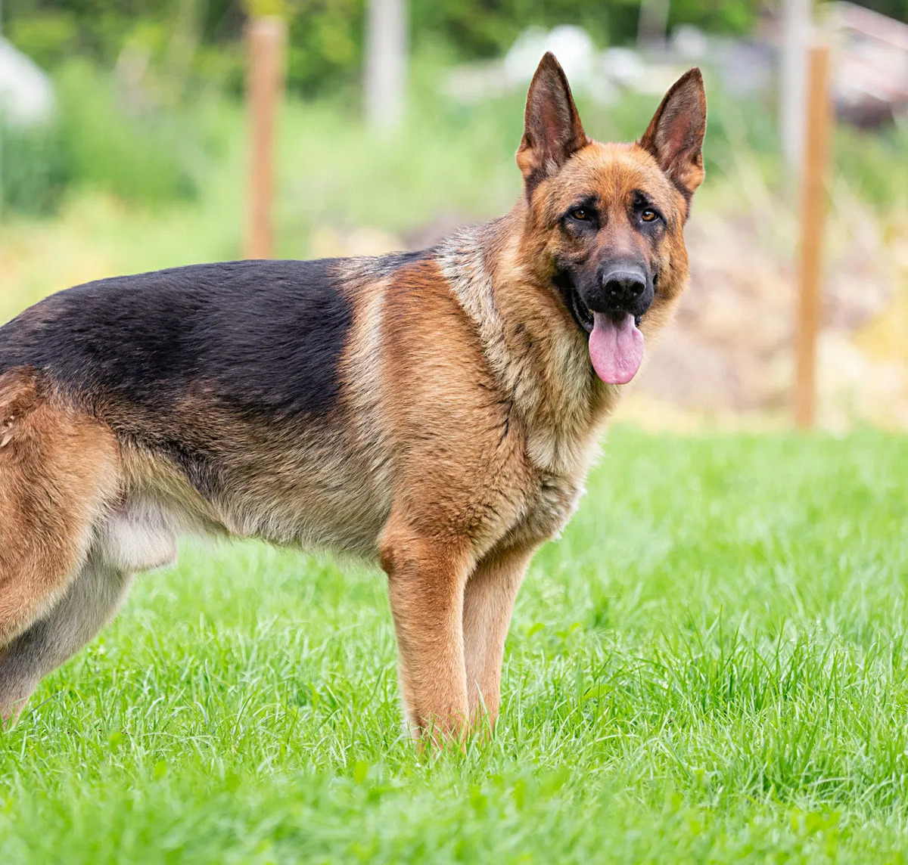
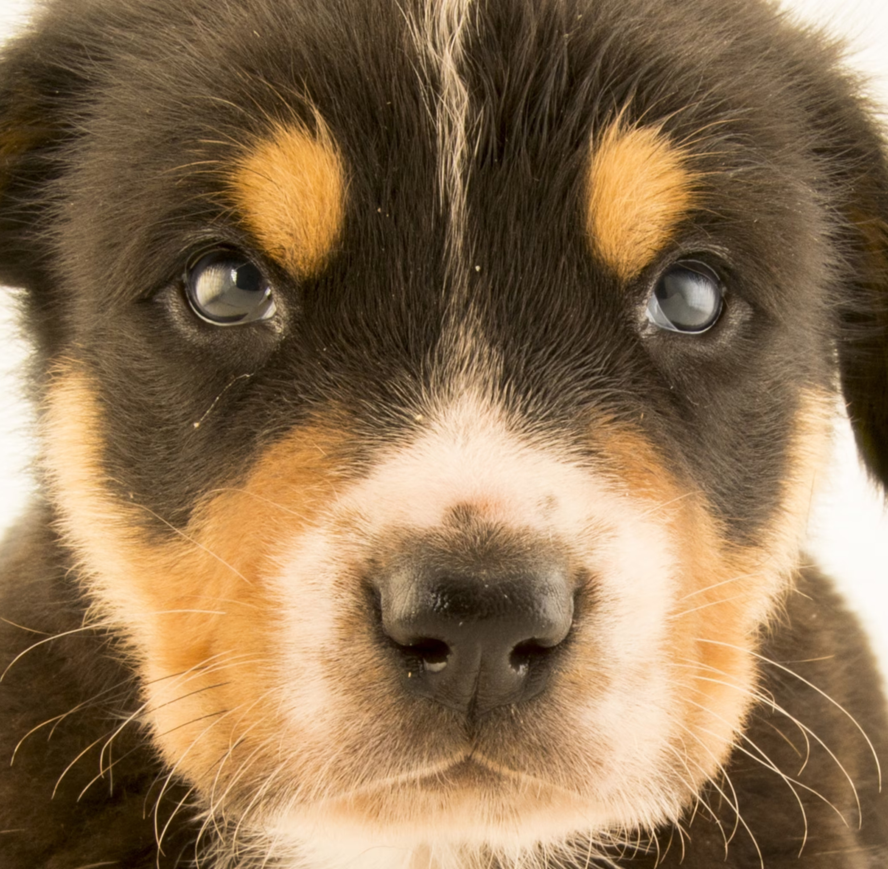
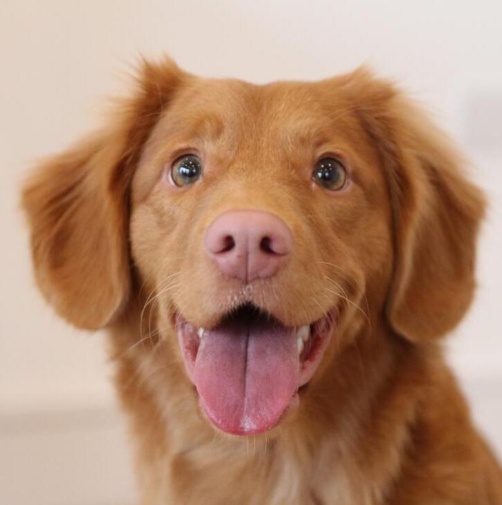
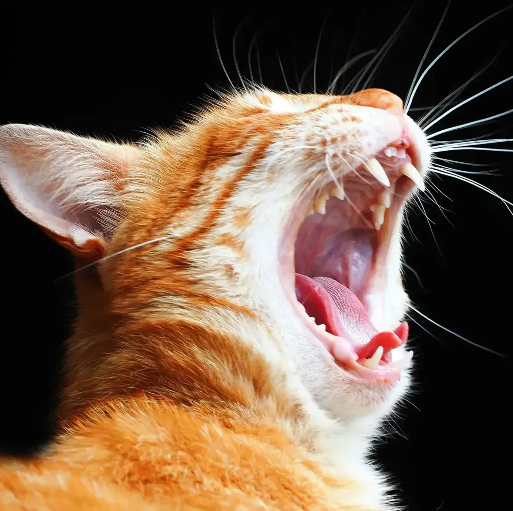
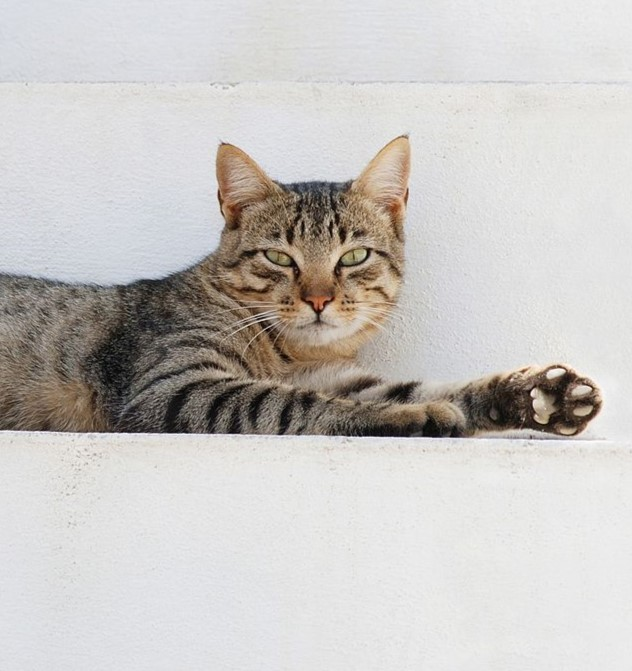
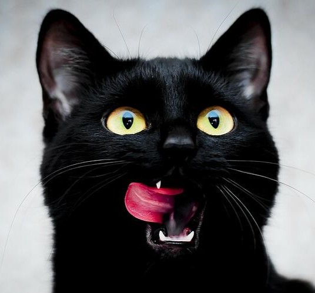

Get a sneak peak of our animals!

|
 |  |  |
|
Bella Breed: Golden Retriever Age of Animal: Puppy/Kitten Animal Gender: Female Gets along with other dogs Suitable for a family with small children |
Charlie Breed: German Shepherd Age of Animal: Adult Animal Gender: Male Suitable for a family with small children |
Milo Breed: Rottweiler Age of Animal: Puppy/Kitten Animal Gender: Male Gets along with other dogs Suitable for a family with small children |
Luna Breed: Nova Scotia Duck Tolling Retriever Age of Animal: Young Animal Gender: Female Gets along with other dogs Gets along with other cats Suitable for a family with small children |

|
 |  |  |
|
Puff Breed: American Shorthair Age of Animal: Young Animal Gender: Female Gets along with other cats Suitable for a family with small children |
Whiskers Breed: Orange tabby cat mid-yawn. Age of Animal: Adult Animal Gender: Female Suitable for a family with small children |
Felix Breed: Mackerel tabby Age of Animal: Adult Animal Gender: Male Gets along with other dogs |
Lady Breed: Black American Shorthair Age of Animal: Young Animal Gender: Female Gets along with other dogs Gets along with other cats |